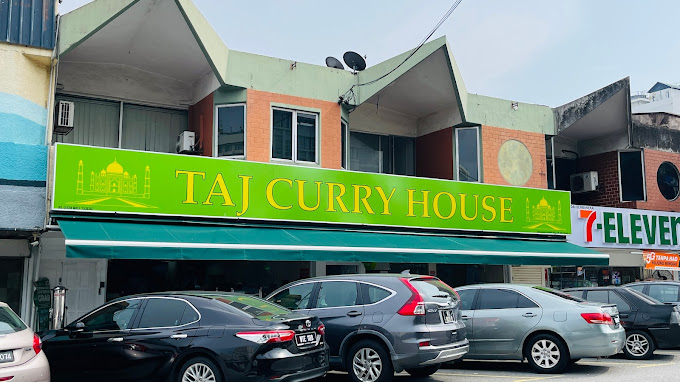
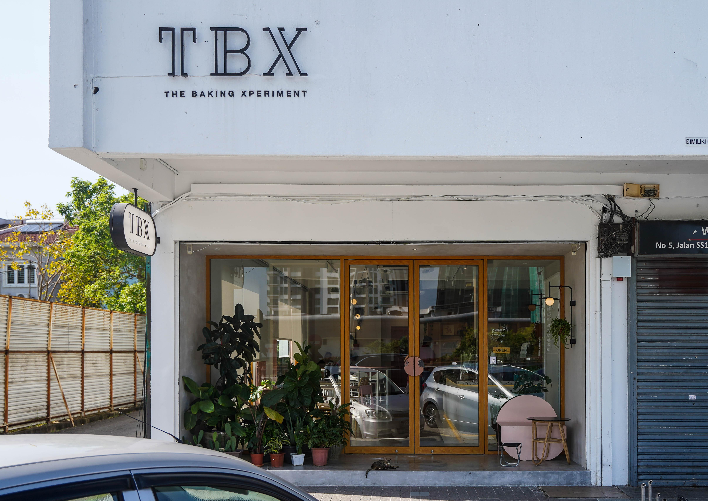
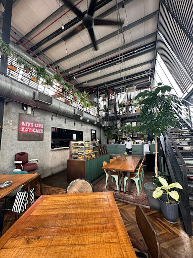

A variety of restaurants are abound in Subang Jaya and its various neighborhoods. Here are some of the places I've particularly enjoyed
Jyu Raku| Taj Curry House| The Baking Xperiment (or TBX)| Jibby & Co| Foo Hing Dim SumAdress: 13, Jalan SS 15/5a, SS 15, 47500 Subang Jaya, Selangor
What and why: An authentic Japanese restaurant run by actual Japanese residents in Malaysia. After trying the various Japanese places in Subang, my family eventually discovered how good the place was. The quality of the sashimi was beyond comparison, the seating was pleasant, and there was also a free chauffeur service to park our cars. Plus, they also had local Japanese magazines that allowed me to discover more good restaurants in Malaysia.
Recommendations: My preferred meal there is a salmon shioyaki rice set combined with sashimi rice. However, you are free to order whatever dishes you want. Try their sashimi moriawase, as well as the special orders available at the counter! Don't forget their teppanyaki options either!
Address: 8 & 9, Jalan SS 12/1b, SS 12, 47500 Subang Jaya, Selango
What and why: This nearby mamak was a keystone of my childhood. Whenever I joined my mother in running at Subang Ria Park, we would retire to this restaurant to eat some roti canai/cheese for breakfast. As a result, it bears a special place in my memories.
Recommendations: While the restaurant's menu has changed considerably since I came here, DO NOT skip their tandoori chicken. It's a godsend and a delicious meal. Also, be sure to try their selection of naan!
Address: 5, Jalan SS 17/1A, Ss 17, 47500 Subang Jaya, Selangor
What and why: A cafe in SS17 run by an upstairs church, its surprising location adds an element of quaintness along with its relaxing design. The pastry in this cafe is to die for, as well as their selection of coffee. Sometimes, I wish I could also order their selection of chocolate cookies. Maybe next time.
Recommendations: My mother would usually order the cafe's pain au chocolat and turkey ham & cheese croissant. Sometimes, we even ordered the mushroom pillow pastry as well. Choose any of these for your trip there. Also, please try the cookies if your stomach has enough space! And their lattes!
Address: GK-11, Ground Floor, Empire Shopping Gallery, Jalan SS 16/1, 47500 Subang Jaya, Selangor
What and why: One of many delicious fusion restaurants opened by the Serai Group, Jibby & Co's greenhouse styled building makes it an amazing sight to witness in Empire Shopping Gallery. The selection of Western and Eastern food, the friendly environment, as well as the photo-worthy plant displays make for a pleasant dining experience.
Recommendations: Always make sure you order the margherita pizza. The crust, cheese and herbs combine to form a delicious mix. Other than that, try out their seafood aglio olio for a spice kick! Actually, try EVERY item on the menu: they're all equally delicious.
Address: No. 1A, 2A & 3A, Jalan USJ 10/1h, 47610 Subang Jaya, Selangor
What and why: My family has tried numerous dim sum restaurants in my life. But this place has to be one of the best. Whenever we go there for lunch, there is always a long line of customers waiting for their fix of dumplings and pau. The hustle and bustle, the flavor of their tea, and the quality of their meat mean that spending minutes waiting will be worth it.
Recommendations: There's so many good choices to order in a dim sum restaurant so I'll just list down what my family usually orders:
{kind=link}